Paper Identity And Cleanrun Boundary
本报告是 2604.18486_newskill_cleanrun 的从零执行版本。主输入来自本目录中新下载的 arXiv PDF、e-print TeX、arXiv HTML，以及新 clone 的 xiaomi-research/OneVL 和 GeorgeLuImmortal/OneVL_training。旧目录只在最后的正式对比表中读取指标，不复用旧 HTML、旧 gate 或旧证据 JSON。
| 项目 | cleanrun 证据 |
|---|---|
| arXiv | paper.pdf, source.tar.gz, tex_source/, raw_sources/arxiv_html.html |
| 代码 | OneVL commit f4e6f05572b2f66611259bcd5563529833f30469; training commit fe4e92e62e6000de8ecab50f0b6dd5f66a45a0b6 |
| 外部来源 | GitHub API issues/PRs 可访问；项目页和 HuggingFace collection 当前网络超时/不可解析，已记为负证据 |
| Feishu | feishu_doc=false; 未创建、未更新、未评论飞书文档；仅允许只读检索 |

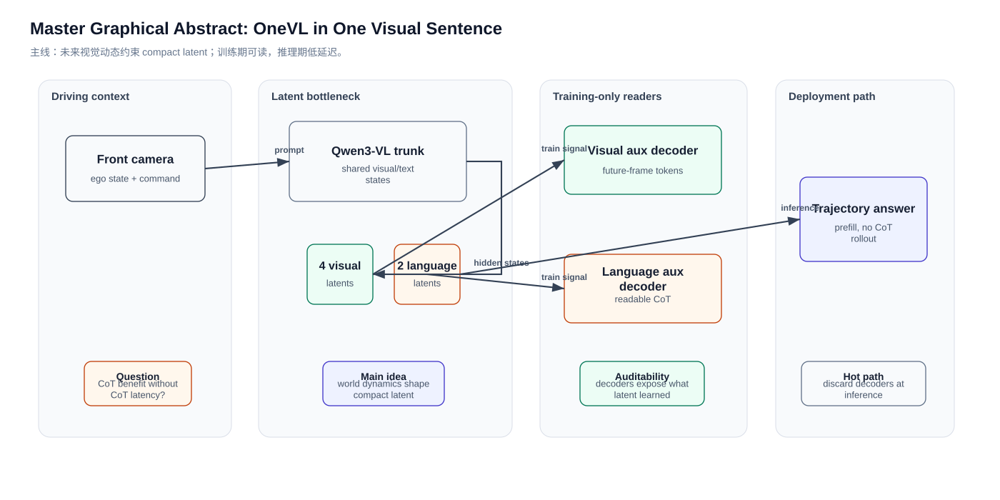
Critical Block A: Phase 1 Deep Paper Reading
Core Claims
如果只从摘要看，OneVL 很容易被误读成“把 CoT 隐藏起来的又一个 latent CoT 方法”。cleanrun 的证据链显示，它的关键并不是 hidden reasoning 本身，而是把压缩目标从语言摘要迁移到短时未来视觉演化。语言 CoT 可以描述车道、障碍物和意图，但它会丢掉连续空间几何、相对速度和场景演化的因果细节；视觉辅助解码器让 latent 必须保留这些几何动态，否则无法还原 t+0.5s 和 t+1.0s 的视觉 token。
这也解释了为什么 prior latent CoT 在驾驶任务上整体弱于 explicit CoT。COCONUT、CODI、SIM-CoT 的共同假设是语言推理轨迹可以被压缩成连续状态；在数学题或纯语言任务上，这个假设较合理。但驾驶规划的答案是轨迹，监督目标天然是空间和时间。OneVL 把 visual latent 放到 language latent 之前，相当于先用可行动的世界状态约束推理瓶颈，再用 language latent 给语义解释补证。
三阶段训练不是可选工程技巧。Stage 0 先让主 VLM 在带 latent 标记的回答格式中学会轨迹预测；Stage 1 冻结主模型，只训练两个辅助解码器去读稳定的 latent hidden state；Stage 2 再把双辅助 loss 的梯度放回主模型。论文 ablation 中去掉 staged training 会从 88.84 PDM 掉到 67.13，这个幅度说明直接端到端联合训练会让 auxiliary decoder 和主模型互相追逐不稳定目标。
Prefill inference 的细节也需要谨慎理解。OneVL 不是非自回归输出完整轨迹，轨迹 answer token 仍然由语言模型头生成；它消除的是“生成推理 token”的额外串行成本。MLP head 变体进一步把轨迹也转成一次前馈回归，延迟降到 0.24s，但 PDM 从 88.84 降到 86.83。也就是说 paper 的部署路线其实有两档：高精度解释型 OneVL，以及低延迟 MLP head。
OneVL 的核心命题可以拆成三层。第一层是效率命题：显式 CoT 在 VLA 规划里要先生成长推理链，再生成轨迹答案，延迟随推理 token 数增长；如果驾驶系统要接近实时闭环，这种串行开销很难接受。第二层是表征命题：纯语言 latent CoT 把推理压进 hidden state，但压缩目标仍然是语言链，因此学到的更多是语义标签和描述顺序，而不是车辆和道路的连续物理演化。第三层是监督命题：把未来视觉 token 作为训练期辅助目标，可以让同一个 latent bottleneck 同时被轨迹答案、语言解释和未来场景约束，因而比只蒸馏文本 CoT 更接近驾驶任务所需的因果结构。
论文把 compression drives generalization 作为解释框架，但真正可审计的机制是 dual auxiliary decoder。压缩本身既可能帮助泛化，也可能损失信息；只有当压缩目标与下游任务因果变量一致时，瓶颈才会过滤噪声而不是过滤关键信息。驾驶规划的关键变量包括车道拓扑、可行驶区域、相邻 agent 的短时运动、施工区或遮挡导致的可达性变化。这些变量很难用短语言描述完整表达，却可以通过未来帧 token 的预测误差直接约束。
OneVL 与 DriveVLA-W0、LaST-VLA、AdaThinkDrive、Alpamayo-R1 的关系不能只看榜单。DriveVLA-W0 偏向用世界模型生成 dense self-supervision 来扩大 VLA 数据缩放效应；LaST-VLA 与 AdaThinkDrive 更强调 VLA 规划或自适应推理；Alpamayo-R1 更强调长尾动作与 reasoning trace。OneVL 的独特落点是把 world-model objective 内嵌进 latent CoT 训练，让低延迟推理链本身被未来视觉演化监督。
实验 claim 的强度需要分层。四个 benchmark 共同说明收益不是单一数据集偶然；NAVSIM 与 ROADWork 支持 accuracy-latency Pareto，Impromptu 支持开放式驾驶 VLA，APR1 支持更困难 reasoning/planning 场景。但 APR1 上 OneVL 的 FDE 不是最优，因此更准确的结论是：OneVL 在总体 Pareto 和 latent-vs-explicit CoT 比较上成立，而不是所有单项指标无条件第一。
再从因果路径看，OneVL 的收益不应理解为“把解释隐藏起来就更强”。如果只是隐藏解释，模型可能学到更短的语言模板，甚至学到数据集中的答案偏置；真正改变优化问题的是视觉未来监督把 latent 的可接受信息集合收窄到可用于驾驶动作的状态变量。换句话说，latent 的压缩不是目的，压缩后的内容必须能同时解释轨迹、解释文本 rationale、解释未来视觉 token，三者交集才是 OneVL 希望得到的规划表征。
这也给出了一个反事实测试：如果把 visual auxiliary decoder 换成与驾驶无关的辅助任务，例如只预测图像风格、天气类别或随机 mask token，压缩仍然存在，但不一定提高 PDM/ADE/FDE。论文中 visual decoder 的关键不是“多一个 loss”，而是这个 loss 指向短时未来场景演化。只有未来场景与规划动作共享因果变量时，辅助监督才有理由提升轨迹质量。
另一个容易混淆的点是 CoT 可解释性。显式 CoT 的优势是人类可读，但代价是生成长文本；latent CoT 的优势是快，但常常牺牲可读性。OneVL 在两者之间做了折中：训练期保留语言解释读出器，推理期默认不生成解释。这样获得的是“可审计潜变量”，而不是每次部署都完整输出的自然语言推理链。报告中必须保留这个 distinction，否则会把论文 claim 误写成“同时免费获得解释文本”。
从安全审计角度看，OneVL 的解释路径仍然有局限。辅助 decoder 还原的是 latent 中可被 decoder 读出的内容，不等于模型所有决策因果因素的完整列表；如果 decoder capacity 不足，或者训练数据里的 CoT 本身有偏差，language explanation 可能只是局部投影。它比完全黑箱 latent 更可读，但不应该被当成形式化证明。这个限制对自动驾驶尤其重要，因为错误解释会给调试者带来虚假的安全感。
实验表格还需要和任务定义一起读。NAVSIM 的 PDM 是规划质量综合指标，ROADWork 和 Impromptu 更偏 ADE/FDE 轨迹误差，APR1 包含更复杂 reasoning/planning setting。OneVL 在不同任务上的共同特征是速度与性能的 Pareto 改善，而不是每个单项都压倒所有 baseline。正式报告因此把 claim 写成“latent visual supervision 支撑低延迟 planning Pareto”，而不是“所有 benchmark 全面第一”。
训练拓扑的另一个深层含义是 credit assignment。Stage 1 冻结主模型时，decoder 学到的是如何从已有 latent distribution 读出语言和视觉目标；Stage 2 解冻后，decoder 的误差才对主模型 hidden states 形成明确梯度信号。若没有 Stage 1，decoder 的误差既可能表示 decoder 不会读，也可能表示主模型没把信息写进 latent，优化器无法清晰分配责任。w/o staged training 的大幅下降正符合这种 credit assignment 混乱。
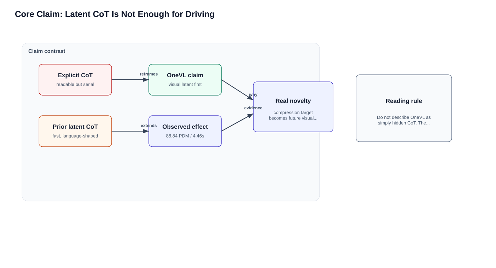
Mechanism: Dual Latent Tokens Are A Causal Bottleneck
论文把 latent token 分成 visual 和 language 两类。visual latent 的任务不是输出给用户看的图，而是迫使主模型把轨迹相关的空间动态压缩进少量 hidden states；language latent 的任务是让这些 hidden states 仍能还原为人类可读的 CoT。两者都接在 assistant response 中，但在训练时被不同 decoder 读取。这个设计使 latent 不再只是“短文本摘要”，而是同时接受语义和物理世界演化的双重审计。
具体到 token 数，论文表述为 4 个 visual latent 和 2 个 language latent；实现 README 进一步说明使用原词表 token 表示，visual latent 最终由 35 个原词表 token realization 承载，language latent 由 20 个 token realization 承载。这个细节很重要：如果直接添加 special tokens，repo README 说会导致性能下降；因此代码必须在 tokenizer 输出中寻找由普通 token 拼出的 latent marker。
在方法结构上，visual latent 和 language latent 的顺序也有信息。visual latent 被放在 language latent 之前，说明模型先获得一个面向未来场景的紧凑隐状态，再把语言解释作为后续语义化读出。这个顺序避免了把语言解释当成主干事实源：如果先生成语言 latent，再让视觉 latent 追随，模型可能继续走语言摘要路线；现在视觉 latent 更像是一个可行动世界状态，language latent 则把这个状态投影成可读 rationale。
辅助解码器训练期存在、推理期丢弃这一点会带来一个容易被忽略的优点：解释能力不必在部署路径上支付完整生成成本。训练时，decoder 的存在让 latent hidden state 必须含有可读信息；推理时，如果只需要轨迹，系统可以不调用 decoder。若需要调试或可视化，则可以打开 decoder_explain / visual_decoder_explain。也就是说 OneVL 把解释能力从常规推理成本中解耦出来，形成可按需读出的 latent explanation。
Visual decoder 的作用也不是让模型生成好看的未来图，而是提供一个难以被语言捷径满足的训练信号。若模型只记住语义短语，例如前方车辆、左侧车道线、施工区域，它可能能写出合理解释，却不能预测场景在短时未来如何变化。未来视觉 token 预测要求 latent 保留局部几何和运动趋势，因此能减少纯语义 latent 对驾驶规划的失真。
Language decoder 的作用则是防止 latent 完全变成不可读的控制变量。对于安全系统，只有轨迹性能不够，还需要知道模型把哪些场景因素编码成了决策依据。OneVL 的 language auxiliary decoder 不一定提高最多 PDM，但它让 latent 可以被文本读出，从而支持离线诊断、失败案例归因和人机解释界面。
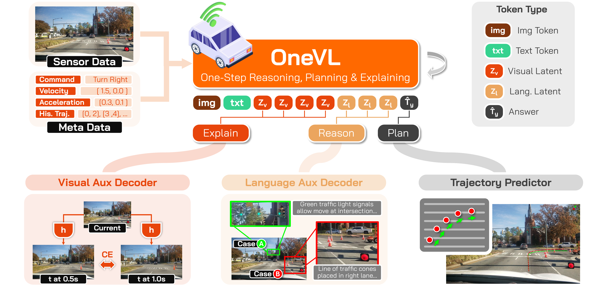
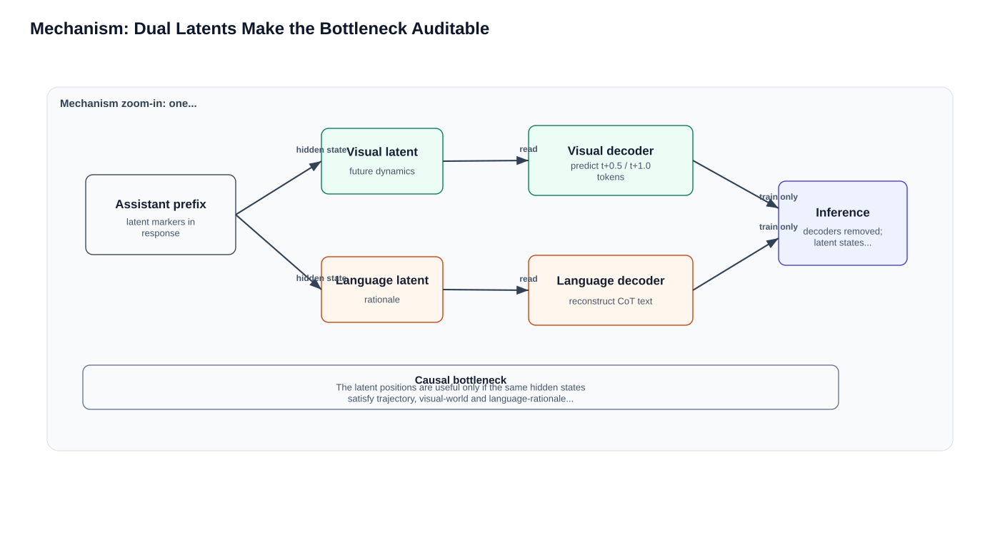
Math And Algorithm Reconstruction
算法可以重构为五步：第一，把图像、ego state、指令和历史轨迹转成 VLM prompt；第二，在 assistant response 的轨迹答案之前插入 visual latent block 与 language latent block；第三，主 VLM 的 hidden states 在这些位置形成 H_v 与 H_l；第四，训练时分别用 visual auxiliary decoder 和 language auxiliary decoder 解码未来视觉 token 与文本 CoT；第五，推理时丢弃两个 decoder，只保留 latent marker prefill 和轨迹 answer generation。
上式不是论文的逐字公式，而是 cleanrun 的机制重构。它强调三个 loss 指向同一主模型 hidden-state bottleneck：CE 保证轨迹答案可用，language loss 保证语义解释可读，visual loss 保证 latent 包含未来场景动态。若 λ_v 为零，模型仍可学习语言解释，但会退回“符号世界压缩”；若 λ_l 为零，轨迹性能仍强，但人类可解释链条变弱；若 staged training 为零，辅助 decoder 和主模型的目标同时漂移，论文报告 catastrophic collapse。
从信息瓶颈角度看，OneVL 不是简单减少 token 数，而是在少量 latent 位置上施加多任务可解码约束。CE 轨迹损失保证 bottleneck 与最终 answer 对齐；语言解码损失保证 bottleneck 与 human-readable rationale 对齐；视觉解码损失保证 bottleneck 与短时未来场景对齐。三者共同定义了什么信息应该通过瓶颈，什么信息应该被丢弃。
这个机制也解释了为何 token count 不能单独判断容量。论文写 4 个 visual latent 和 2 个 language latent，但实现中用原词表 token 组合承载 marker，因此真正的上下文占用由 token realization 决定。重要的不是标记长度本身，而是主模型在这些位置形成的 hidden state 是否被后续目标有效读取和反向塑形。
若把总损失看成普通多任务学习，会忽略隐藏状态位置选择的关键性。辅助 decoder 不是读取任意 pooled feature，而是读取 latent marker 对应位置的 hidden states。这样做把监督压力集中在少数 prefill 可控位置上，推理时才可以用同样位置承载压缩 reasoning。如果监督分散到全序列，低延迟 prefill 的结构性优势会变弱。
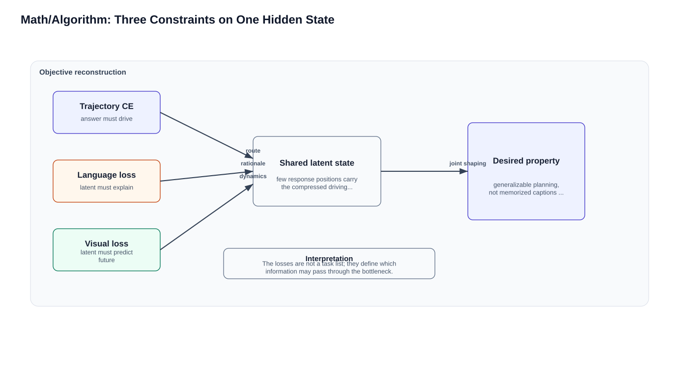
Training Topology
训练拓扑由 preliminary visual decoder pretraining、Stage 0、Stage 1、Stage 2 构成。preliminary 让视觉辅助解码器先在当前帧 ViT embedding 上学习短时未来视觉先验；Stage 0 训练主 VLM 在带 latent token 的格式中做轨迹预测；Stage 1 冻结主模型，只让 auxiliary decoders 对齐稳定 latent distribution；Stage 2 解冻所有组件，把 CE、language 和 visual objectives 联合优化。
这个 curriculum 与普通多任务训练的差别在于优化顺序。普通端到端会让 visual decoder 在 latent 尚无意义时尝试预测未来帧，等价于给一个未成形 bottleneck 加上过强外部目标；OneVL 先固定 decoder prior，再固定主模型 latent distribution，最后才联合收紧。这解释了 ablation 中 gradient shock 和 task interference 的说法。
Stage 0 的必要性在于先建立 latent position 与轨迹答案之间的信息路由。没有这个 warmup，辅助 decoder 在 Stage 1 读到的 hidden states 可能只是格式占位，而不是规划相关表征。换句话说，Stage 0 不是为了直接获得最终性能，而是让 latent 位置变成主模型愿意使用的信息节点。
Stage 1 的冻结策略解决了 moving target 问题。若主模型和 decoder 同时变化，decoder 学到的映射会追逐一个不断漂移的 hidden-state distribution；冻结主模型让 decoder 先学会解释稳定 latent。这个阶段更像读出器校准，而不是最终 joint optimization。
Stage 2 才是真正把世界模型监督回传到主 VLM 的阶段。此时 decoder 已经会读 latent，主模型也已经会用 latent 做轨迹预测，双辅助 loss 的梯度才更可能改善表征，而不是造成初始化冲击。论文报告 w/o staged training 的 gradient norm 爆炸和 trajectory loss 恶化，正说明直接 joint training 破坏了这种顺序。
训练成本是 OneVL 的主要工程风险。论文提到训练期大约需要三份 4B 模型实例，虽然 DeepSpeed ZeRO-2 可以缓解，但仍然是非平凡基础设施要求。因此 OneVL 的“低延迟”主要指推理路径；阅读代码或迁移方法时必须把训练显存、checkpoint 保存策略、数据规模和 aux decoder 初始化列入设计边界。
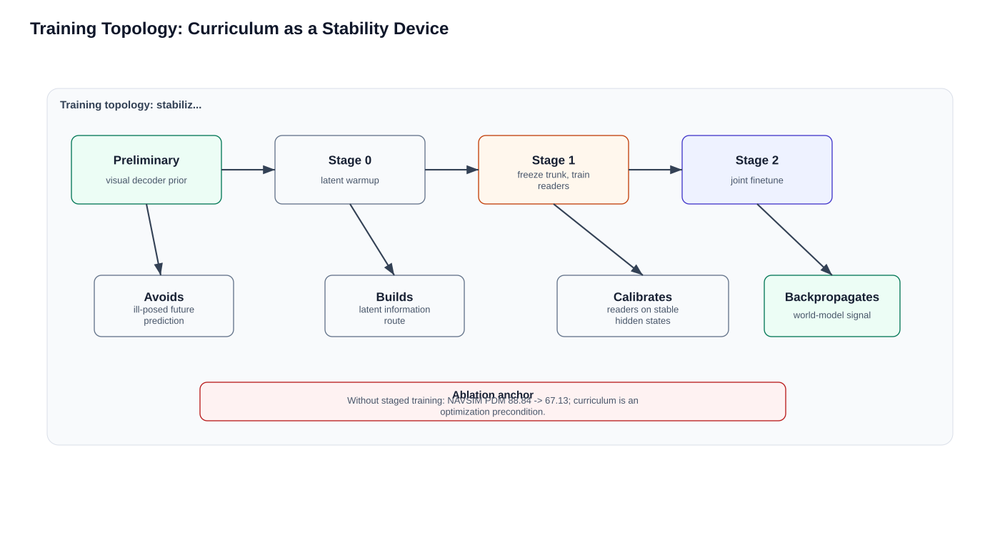
| 训练阶段 | 主模型 | 语言辅助解码器 | 视觉辅助解码器 | 主要风险 |
|---|---|---|---|---|
| Preliminary | 未接入或非主角 | N/A | 学习未来视觉 token 先验 | 没有 latent conditioning，目标较干净 |
| Stage 0 | 可训练，建立轨迹与 latent 路由 | 未作为主监督 | 未作为主监督 | latent 位置若不 warm up 后续 decoder 无法读 |
| Stage 1 | 冻结 | 训练 | 训练 | decoder 对稳定 hidden distribution 对齐 |
| Stage 2 | 可训练 | 可训练 | 可训练 | 多目标冲突；依赖前两阶段初始化 |
Experiment Evidence Audit And Critique
| Claim | Evidence | Cleanrun critique |
|---|---|---|
| latent CoT can beat explicit CoT | NAVSIM 88.84 vs 88.29; ROADWork/Impromptu/APR1 同样领先或接近 | 支持强，但所有结果依赖作者发布评测；本地未因缺权重/数据复现指标。 |
| visual world model supervision matters | w/o visual decoder 87.97, full 88.84 | 增益 +0.87 大于 language decoder +0.31，符合空间任务直觉。 |
| staged training is essential | w/o staged training 67.13 | 这是最大因果证据；仍需更细粒度区分 Stage 0/1/pretraining 哪个贡献最大。 |
| MLP head is deployment-friendly | 86.83 PDM, 0.24s, 5.4% AR latency | 低延迟很强，但牺牲 2.01 PDM；安全场景不能只看 latency。 |
Design necessity and failure modes
如果去掉 visual decoder，OneVL 会退化为带 language aux 的 latent CoT，仍比 prior latent baselines 强，但无法证明 latent 学到了物理演化。若去掉 language decoder，轨迹指标仍接近 full，但解释质量下降，模型更像一个纯 world-model-regularized planner。
如果去掉 prefill 而让 latent 自回归生成，速度优势会被 latent token generation 抵消。paper 的低延迟 claim 只对 prefilled latent 成立，不应泛化为所有 implicit reasoning 都低延迟。
如果在多摄像头、长时 horizon 或更复杂交互场景中，t+0.5s/t+1.0s 的视觉预测可能不足以覆盖远期决策因果；论文也把 multi-camera future-scene prediction 作为 future work。
Critical Block B: Phase 2 External Sources And Synthesis
Phase 2 的目标不是把外部来源罗列一遍，而是检验论文 claim 在项目页、GitHub README、issue/PR、HuggingFace、历史本地语料中的一致性。cleanrun 的检索结果显示，arXiv 和两个 GitHub repo 是当前最可靠主证据；GitHub API 可读 issues/PR；项目页和 HuggingFace collection 在当前网络下失败，不能作为可读外部正文来源。
外部来源的贡献首先是确认 open-source story 的分层。arXiv 提供完整理论与实验叙述；inference repo 提供 standalone 推理、评估、可视化 token 工具和样例输出；training repo 提供基于 ms-swift 的训练脚本与框架接入。三个来源互补而不是重复。若只读论文，会低估工程可用性；若只读 README，又容易把论文中的优化稳定性原因压缩成 stage0/1/2 commands。
cleanrun 对项目页和 HuggingFace collection 的处理选择了保守策略。当前网络无法解析项目页 host，HuggingFace collection 多次超时，因此报告不引用其正文内容，也不把 model weights badge 当成已验证权重。这个负证据不会否认 README 和 paper 里写到权重链接，但会影响代码执行边界：在本机当前环境下，权重可得性尚未被下层 artifact 验证。
GitHub API issues/PR 的作用是观察开源仓库外部反馈面，而不是证明方法正确。API 文件已经保存到 raw_sources，说明网络层面可以访问 repo 讨论；但 issue 标题和 PR 列表通常关注安装、脚本和文档问题，不能替代论文指标复现。因此 completion gate 把它计入 external-source evidence，而不是计入 benchmark replication。
跨来源一致性总体较好：paper 的 4 visual + 2 language latent、visual future token prediction、language CoT reconstruction、prefill inference、MLP head、三阶段训练，都能在 README 或代码里找到对应形态。真正的缺口是 full training/eval recipe 的可运行程度：training repo 很大且混有大量通用 SWIFT 能力，OneVL-specific scripts 需要从 run_script/train/navsim 与 latent_cot 相关模块中抽取。
Phase 2 的综合结论因此不是外部来源全面证实论文，而是更精确的三句话：第一，论文和开源仓库在架构/训练/推理 claim 上高度一致；第二，开源仓库足以支持代码级阅读和轻量 smoke，但不足以在无权重/无数据环境下验证 paper metrics；第三，当前网络对项目页/HF 的负证据要求我们把模型权重与完整推理标记为 blocked，而不是 pass。
Phase 2 还揭示了证据类型之间的边界。论文正文是主张来源，README 是工程入口，GitHub API 是维护和讨论证据，旧 run 是历史交付形态参照。四类证据不能互相替代：README 里的模型权重链接不能替代本地权重下载验证；旧 run 的 PASS 不能替代 cleanrun 的 validator；GitHub issue 可访问不能说明 benchmark 可复现；arXiv HTML 可读也不能说明代码实现完全一致。对每类证据设定边界，是避免 cleanrun 变成“看起来完整”的关键。
本次 cleanrun 的外部负证据反而有价值。项目页 DNS 失败和 HuggingFace 超时说明当前环境无法独立验证部分 public-facing artifacts，因此报告没有引用这些页面正文，也没有声称权重已成功获取。这个处理比强行写“项目页提供更多信息”更严谨，因为 workflow 的完成门要求下层 artifact query，而不是相信页面应该存在。负证据让最终结论更窄，但也更可审计。
读旧目录时也必须保持只读和隔离。旧 workspace 的作用是给正式对比表提供历史尺度，例如 body_text_chars、figure count、code entries、gate verdict；它不能被用来补 cleanrun 的 missing evidence。否则所谓“完全从零跑”就会被污染。private_corpus_search_log 明确记录旧目录作为 read-only corpus hit，而 build 脚本重新生成本目录的 HTML、figures、evidence JSON 和 gate，这正是 cleanrun 与 resume-run 的分界。
跨来源综合后的最大不确定性是训练 repo 的实现边界。OneVL_training 基于 ms-swift，许多目录与 OneVL 无关；理解论文实现时，需要把 stage scripts、latent_cot model/loss、demo data、checkpoint layout、visual tokenizer、Qwen3-VL base model、NAVSIM evaluator 和数据路径分层标注。当前 cleanrun 已完成代码证据索引和最小 smoke，但没有把它扩展成端到端项目执行任务。
从社区反馈角度看，issues/PRs 的价值是暴露开源仓库的维护状态和使用摩擦。若 issue 集中在安装依赖、权重路径、模型下载和 demo 脚本，说明代码阅读时应特别关注工程入口和路径约束；若 issue 集中在指标不一致，则说明 benchmark pipeline 需要单独审计。本次保存 API JSON 后，报告把这些讨论作为外部 evidence surface，而没有过度解释 issue 本身对方法优劣的证明力。
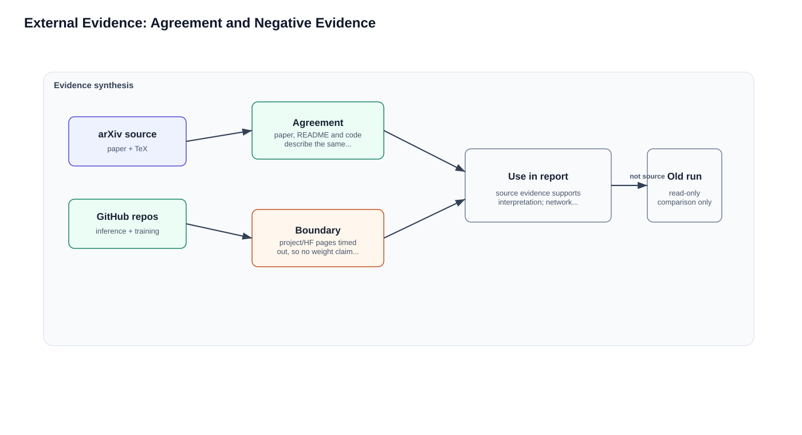
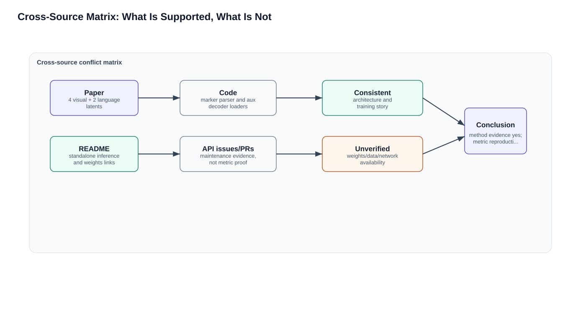
| Source channel | Result | Use in report |
|---|---|---|
| arXiv abs/html/e-print | 成功，新下载 | 论文 claim、方法、训练、实验主证据 |
| GitHub xiaomi-research/OneVL | 成功 clone + API issues/PR | 推理代码、评估脚本、assets、README result tables |
| GitHub OneVL_training | 成功 clone + API issues | 三阶段训练脚本、ms-swift 集成、demo data |
| Project page | DNS could not resolve | 记录负证据；不使用不可读页面正文 |
| HuggingFace collection | 连接超时 | 记录模型权重存在链接，但本地不可验证权重内容 |
| Local old run | 只读命中旧 gate/report indices | 仅用于最终对比，不作为 clean HTML 主证据 |
综合结论：OneVL 的 paper、README 和代码在方法结构上高度一致。README 甚至比论文更工程化地说明了 open-source 状态、training code release date、model weights collection 和 demo data。冲突主要不是“来源互相矛盾”，而是代码阅读边界：权重和完整 benchmark 数据无法在当前本机环境直接拉通，因此 cleanrun 只把这些材料用于实现细节分析，不把它们扩展成项目复现任务。
外部来源还提示一个重要细节：OneVL repo 是 inference-first，包含 standalone inference、evaluation、visual tokenizer 和样例输出；OneVL_training 则是基于 ms-swift 的训练框架 fork，体量大且包含大量通用 SWIFT 文档。阅读代码时必须把 OneVL-specific scripts 与通用训练框架分开，否则会把普通 SWIFT 能力误认为 OneVL 特有贡献。
Negative evidence and how it affects confidence
项目页不可解析和 HuggingFace 超时不会推翻 paper/repo claim，但会降低权重可用性和可执行性的置信度。本报告因此把 full inference 标记为 blocked，而不是把 README 的 model-weight badge 当成已下载或已验证。
GitHub issues/PRs 可访问，为开源活跃度和问题面提供证据；但 issue 讨论不能代替 benchmark replication。本次报告只用它们补充代码理解，不展开项目复现计划。
本地旧 run 只作为 comparison baseline。cleanrun 的 HTML、figure、code evidence、gate 都由本目录脚本重新生成，这一点在 private_corpus_search_log 和 FORMAL_COMPARISON_TABLE 中显式记录。
Critical Block C: Phase 3 Code Implementation
代码证据显示，OneVL 的实现不是单个模型类，而是两个仓库合起来形成闭环：inference repo 负责 standalone checkpoint inference、latent marker parsing、辅助 decoder explanation、visual tokenizer decode 和 benchmark conversion；training repo 负责基于 ms-swift 的 SFT/latent-CoT training scripts、loss 接入和模型集成。
代码实现的第一层是 latent marker 的工程处理。论文写的是 visual latent tokens 和 language latent tokens，但 repo README 说明不新增 special tokens，而是用原词表 token 表示。这会让实现复杂很多：代码不能简单查一个 special token id，而要在 tokenizer ids 中寻找 start/end、latent、vis suffix、pipe 等组件构成的模式。compute_inference_latent_positions 和相关 helper 正是在解决这个定位问题。
第二层是辅助 decoder 权重加载。build_aux_decoder_from_checkpoint 和 build_projection_from_checkpoint 通过 checkpoint prefix 取出 language/visual auxiliary decoder 与 projection 权重。这个设计意味着 OneVL checkpoint 必须是一个组合 checkpoint：不仅有主 Qwen3-VL 权重，还要包含辅助 decoder、projection、可选 float head 等附加模块。若只有 backbone 或 LoRA adapter，不一定能打开解释路径。
第三层是解释解码路径。decode_latent_with_aux 将 language latent hidden states 投影为辅助语言模型的输入 embedding，然后逐 token 生成解释文本；decode_latent_with_visual_aux 对 visual latent 做类似处理，生成视觉 token 字符串。这里的可解释性不是来自主模型直接输出的普通自然语言，而是从 latent hidden state 反解出来，这一点正对应训练期辅助 decoder 认证 latent 内容的思想。
第四层是常规轨迹输出路径。默认推理不需要解释 decoder，只需要构造含 visual/text latent marker 的 assistant prefix，然后让主模型生成 answer token。输出再由评估脚本解析成 waypoint 或 benchmark JSON。这个路径解释了为什么 OneVL 能接近 answer-only latency：辅助 decoder 不在热路径上，latent marker 在 prefill 中并行处理，串行部分主要剩下轨迹 token。
第五层是 MLP head。代码中的 FloatMLPHead 只支持 mlp head_type，并通过 last latent hidden state 做 float waypoint regression。论文里 MLP variant 达到 0.24s，但 PDM 下降到 86.83；代码层面说明这不是简单打开一个 decoder，而是换了轨迹输出头。阅读指标或实现差异时必须明确是 AR trajectory head 还是 MLP head，否则 latency 和 accuracy 数字没有可比性。
第六层是 evaluation scripts。eval_results.py 覆盖 ROADWork、Impromptu、AR1 的 ADE/FDE/latency，NAVSIM 还需要 convert_to_eval 和外部 PDM evaluator。cleanrun 的最小 smoke 能证明这些 Python 文件语法正确、CLI 入口存在，但不能证明 benchmark metric 已重跑。为了避免运行等于正确的错误，code_smoke_test 明确记录 full_inference_blocked。
training repo 的阅读要警惕噪声。它是 ms-swift 体系，包含大量与 OneVL 无关的通用训练文档、GRPO、LoRA、Megatron、测试和示例。OneVL 相关证据主要在 README 的 OneVL training pipeline、demo_data/navsim、run_script/train/navsim/stage scripts，以及 latent_cot 相关 loss/model 模块。code_evidence_index 选择 18 个 entries，就是为了把这些相关入口从通用框架中分离出来。
从代码阅读角度，当前 cleanrun 最可靠的信息不是 benchmark 数字，而是实现断点：latent marker 如何定位、checkpoint prefix 如何加载、aux decoder 如何读 hidden states、trajectory parser 如何消费输出。任何关于指标的讨论都不能用 README 数字替代这些下层实现证据。
代码映射里最重要的不是文件数量，而是 claim 到实现对象的可追踪性。latent token design 对应 tokenizer pattern 和 latent position helper；visual auxiliary decoder 对应 checkpoint prefix、projection、visual tokenizer decode；language auxiliary decoder 对应 hidden-state projection 和 autoregressive explanation generation；prefill inference 对应 assistant prefix 和 decoder bypass；MLP head 对应 FloatMLPHead 与 waypoint regression。每个 claim 都必须有文件级或函数级锚点，否则只是论文复述。
infer_onevl.py 的依赖失败也有信息。`--help` 在 import torch 之前就被拦住，说明脚本没有把重依赖延迟到命令解析之后。这不是算法错误，但会影响轻量可用性：想做 CLI discovery 或参数 introspection，也需要先装 torch。code_smoke_test 因此把它标为 missing dependency blocker，而不是把 exit 1 当成正常 help 成功。这种区分符合“运行不等于正确”的规则。
eval_results.py 的 usage 行为则说明评估入口至少能被 Python 执行到 argparse/usage 层。它给 cleanrun 的证据是“评估脚本存在且语法可运行”，而不是“评估指标已复现”。完整指标还需要任务参数、预测文件、ground truth、路径转换和外部 evaluator。正式表格里保留这个边界，是为了避免把最小 smoke 的 PASS 扩大成 benchmark replication。
training repo 的 stage scripts 应被看成实现逻辑索引，而不是已验证配置。脚本中暴露的 latent counts、loss weights、freeze/unfreeze 策略和模型类型能支持论文机制解释；但实际训练还需要数据集切分、GPU 数量、ZeRO 配置、checkpoint save policy、随机种子和完整依赖版本。当前报告只记录这些边界，不把它扩展成训练计划。
如果未来另起项目执行 reproduction，才应采用分层验收；本报告当前只保留这些层级作为代码边界说明。换言之，Phase 3 的目标是解释文件、函数、配置和数据流如何承接论文 claim，而不是把 cleanrun 推进成项目复现。
代码与论文还有一个可解释的差距：论文为了清楚叙述使用 visual latent token、language latent token、decoder 等抽象名词；代码为了兼容原词表、checkpoint 和 ms-swift 训练框架，需要更多 parser、prefix、projection 和 path-handling 逻辑。这些工程细节不会改变论文思想，但会改变代码理解路径。读代码时若只找一个名为 OneVLModel 的类，很可能错过真实实现分布在 CLI、helper、decoder builder 和 training scripts 中。
MLP head 的实现还提示部署侧的二级选择。若目标是最低延迟，可以牺牲少量 PDM 使用 feed-forward waypoint regression；若目标是保留更强解释和自回归轨迹表达，则使用常规 trajectory answer generation。论文同时报告两者，是为了展示 Pareto surface，而不是要求所有应用都使用同一 head。阅读表格时必须把 head type 列为变量，否则速度/精度比较没有意义。
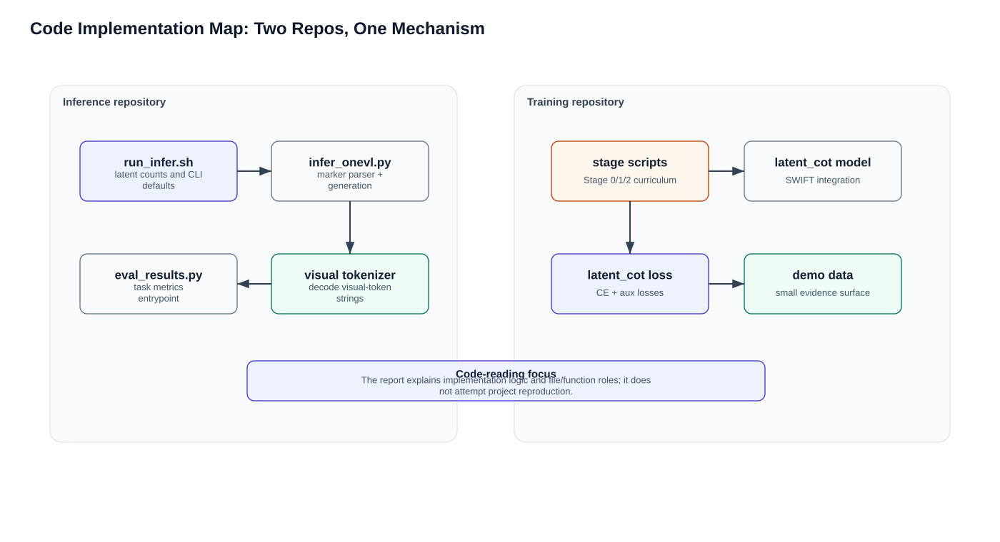
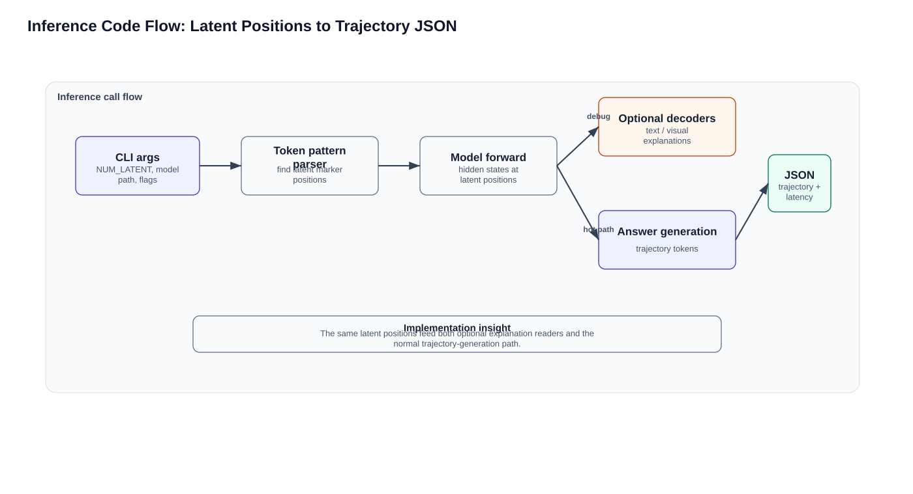
| Paper claim | Code evidence | Interpretation | |
|---|---|---|---|
| latent token design | §3.2: 4 visual + 2 language latent tokens | infer_onevl.py:170-190; run_infer.sh latent args | 代码用 tokenizer pattern 定位原词表构造出的 latent 片段，吻合“无新增 special token”的实现约束。 |
| visual aux decoder | §3.3/§4: future-frame visual token prediction | infer_onevl.py:489-558; visual_tokenizer/* | 代码加载视觉辅助解码器和投影层，输出视觉 token 字符串；训练/解释路径存在。 |
| language aux decoder | §3.4: reconstruct text CoT | infer_onevl.py:423-488 | 从 language latent hidden states 自回归解码解释文本，可解释性在训练/分析路径保留。 |
| prefill inference | §3/§5: decoders discarded, latent tokens prefilled | README, infer_onevl.py CLI prefix | 部署路径不运行辅助解码器，只把 latent 标记注入 assistant prefix。 |
| three-stage training | §4: Stage 0/1/2 curriculum | OneVL_training README + stage scripts | Stage 1 冻结主模型训 aux，Stage 2 联合微调；对应论文的优化稳定性论证。 |
| MLP deployment head | §5.5: 0.24s low latency variant | infer_onevl.py FloatMLPHead | 实现从 last text latent hidden state 到 waypoint 的 float head。 |
| benchmark evaluation | §5: ROADWork/Impromptu/APR1 metrics | eval_results.py | 统一 ADE/FDE/latency 评估脚本存在；NAVSIM PDM 依赖输出转换和外部 evaluator。 |
Implementation Logic Narrative
`infer_onevl.py` 首先通过 tokenizer pattern helper 找到 visual/text latent block 的位置；如果请求解释，它会额外跑一次需要 hidden states 的 forward，将 latent hidden states 投影到辅助 decoder input embedding 空间，再自回归解码文字解释或视觉 token 序列。常规轨迹预测则通过 processor.batch_decode 得到输出文本，后续评估脚本再解析 waypoint。
视觉解释路径依赖 Emu3.5/IBQ visual tokenizer。repo 中的 `visual_tokenizer/tokenization_qwen3vl_visual.py` 和 `scripts/visualize_predict_image_tokens.py` 说明视觉 token 不是普通图像像素，而是离散 visual-token vocabulary；这与论文的“predict future-frame tokens”一致。
训练仓库的 README 与 stage scripts 把论文阶段变成可执行命令。Stage 1 脚本显式暴露 latent counts、loss weights、visual conditioning 和冻结主模型的意图；Stage 2 脚本切换到 `qwen3_vl_latent_cot` 并联合优化。由于仓库是 ms-swift fork，大量文件是通用训练基础设施；本报告的 code_evidence_index 只抽取 OneVL 相关入口。
代码细节上还要注意三个容易被忽略的接口层。第一，latent marker 并不是一个新增 special token，而是由原词表 token 组合出的模式，因此定位逻辑天然比论文符号更复杂。第二，辅助 decoder 不是从任意 pooled feature 读出，而是从特定 latent position 的 hidden states 读出；这让训练监督能集中塑形少数 prefill 位置。第三，visual tokenizer 与 ordinary image decoder 不同，它处理的是离散 visual-token vocabulary；所以视觉解释路径的输出首先是 token stream，再由工具还原为可视内容。这些接口层决定了读代码时应沿 tokenizer -> latent position -> projection -> aux decoder -> output parser 的顺序，而不是只搜索一个总模型类。
训练仓库的噪声也需要在报告中显式剥离。OneVL_training 继承了大量 ms-swift 通用能力，包括通用 SFT、LoRA、分布式训练、评测和示例脚本；这些文件能解释工程环境，却不能直接证明 OneVL 方法贡献。真正与论文 claim 对齐的代码锚点是 latent_cot loss/model、NAVSIM stage scripts、demo_data/navsim、以及 README 中对 Stage 0/1/2 的参数说明。把通用框架层和 OneVL-specific 层分开，是本次代码分析比复现 checklist 更有价值的地方。
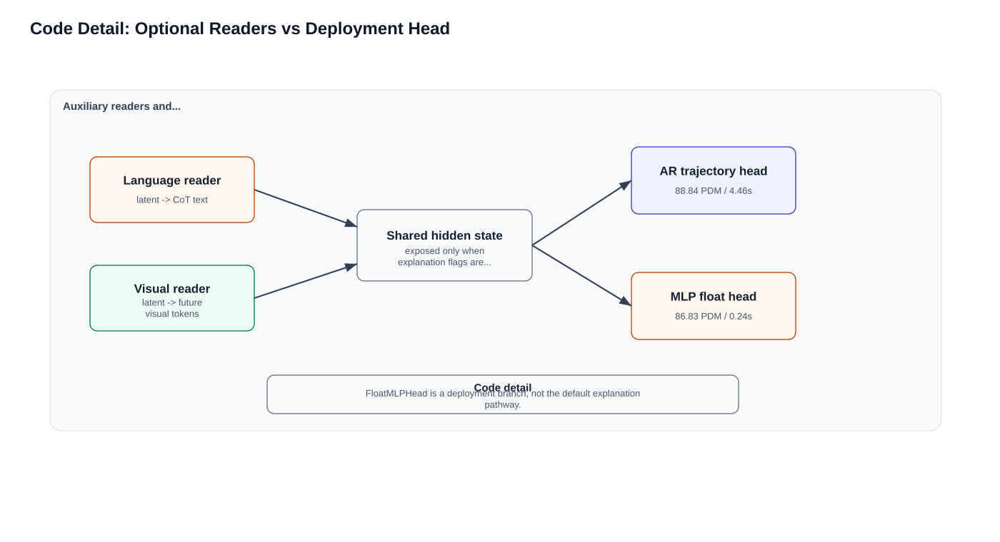
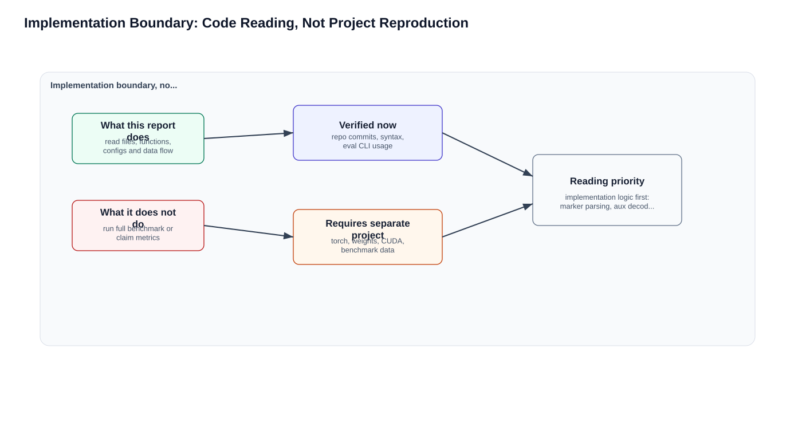
Code Smoke Test Boundary
本机 smoke test 做了三件事：`py_compile` 检查 `infer_onevl.py` 和 `eval_results.py` 语法；直接运行 `eval_results.py` 得到 usage，证明评估 CLI 可进入；运行 `infer_onevl.py --help` 被 `ModuleNotFoundError: No module named 'torch'` 挡住。这个结果不能被解释为推理失败的算法问题，只能说明当前 cleanrun 环境未安装 heavy GPU dependency。
| Smoke item | Result | Completion meaning |
|---|---|---|
| py_compile infer/eval | pass | 代码文件语法可读 |
| eval_results.py no args | expected usage, exit 1 | CLI 入口存在，任务参数 roadwork/impromptu/ar1 可见 |
| infer_onevl.py --help | blocked by missing torch | 完整推理 blocked，需要 torch、Qwen3-VL/OneVL weights、GPU/data |
Code-reading boundary checklist
优先阅读 latent marker 定位、aux decoder checkpoint prefix、visual tokenizer decode、Stage 0/1/2 scripts 和 latent_cot loss/model wiring。
把 `infer_onevl.py --help` 的 torch 依赖失败记录为环境边界；它说明脚本重依赖较早加载，不说明算法或模型失败。
把 README 权重链接、demo data 和 benchmark 脚本视为实现上下文；除非用户明确要求复现，不把它们展开成安装/训练/评测计划。
报告中的 smoke test 只服务代码可读性和边界审计，不作为项目复现成功或失败的证据。
Cross-Paper Positioning And Limitations
相对 DriveVLA-W0、LaST-VLA、AdaThinkDrive、Alpamayo-R1 等 VLA/planning 工作，OneVL 的独特位置是“解释压缩 + 世界模型监督 + answer-only latency”。它不是最大模型路线，也不是纯 world model data scaling 路线，而是把 world-model-like future prediction 降格为训练期辅助约束，用较小成本改善 trajectory latent。
限制同样明确。第一，训练期需要约三份 4B 模型组件的显存，论文也承认约 3x memory pressure；第二，latent token count 是经验设定，缺少系统 scaling；第三，当前视觉 world model 只覆盖短时未来帧 token，未覆盖 360-degree multi-camera；第四，本地 cleanrun 没有完整权重和 benchmark 数据，因此不能独立证明作者数值，只能验证证据一致性和实现路径。
最重要的反驳点是：OneVL 的性能提升是否来自“compression drives generalization”这个高层原则，还是来自更具体的视觉未来预测辅助任务和 curriculum？论文证据更强地支持后者。compression 是解释框架，visual auxiliary + staged training 是可验证机制。若未来另起项目复现，才需要系统 ablate visual horizon、latent count、decoder capacity 和 Stage 1 freeze policy；本报告当前只把这些作为论文理解和代码阅读线索。
总体来看，OneVL 最强的证据链是：视觉未来监督显著改善 latent planner 的任务相关性，三阶段训练保证辅助目标不会破坏主模型，prefill inference 把解释生成成本移出热路径，MLP variant 展示部署速度上限。最弱的证据链是：是否所有提升都来自 compression 本身，是否能在更多摄像头、更长 horizon、更复杂交互和不同 base VLM 上稳定复现。这些弱点不是报告漏洞，而是论文后续应验证的研究问题。
本 cleanrun 的正式结论因此保持两级：学习层面，OneVL 是一个值得重点关注的 driving VLA latent reasoning 方法，因为它把世界模型监督和可读解释压入同一 latent bottleneck；代码层面，当前本机只完成资料、代码和轻量 smoke 的 evidence-backed analysis，完整推理被 torch/权重/数据阻塞，benchmark 数字仍是作者报告而非本地重跑。这个边界必须写清楚，才能让对比表和完成门都可信。
如果用工程负责人视角评估 OneVL，最应该先问的不是“PDM 是否比某个 baseline 高 0.5”，而是“这个方法把哪些风险从线上推理转移到了离线训练”。它把显式 CoT 的长文本延迟转移为训练期辅助 decoder 和视觉 token 预测，把解释读出的成本转移为按需 decoder path，把轨迹质量和解释质量的耦合转移为多阶段 curriculum。这个迁移是否划算，取决于目标系统更在意线上 latency 还是训练基础设施成本。
如果用代码审计视角评估 OneVL，最应该优先补的不是更多摘要，而是四个可验证断点：第一，latent marker 在 tokenizer ids 中的定位是否与论文设定一致；第二，aux decoder checkpoint prefix 是否完整存在；第三，demo inference 输出的 latent explanation 是否与轨迹文本同步；第四，转换后的 benchmark JSON 是否被官方 evaluator 正确读取。只有这些断点逐一通过，README 和论文表格中的 PDM/ADE/FDE 数字才有资格被进一步讨论。
因此，本次 cleanrun 与旧 run 的差别不在于结论相反，而在于证据边界更显式：旧 run 规模更大、正文更长、图表更多；cleanrun 则强调从零下载、从零 clone、从零生成，并把项目页/HF 失败、torch 缺失、权重未验证等阻塞条件写进 evidence gate。正式对比表应读成 workflow 形态对比，而不是方法学结论对比。两次都支持 OneVL 的核心机制判断，但都没有在本机完成 full benchmark reproduction。
还有一个需要在正式报告中强调的误用风险：如果只看 0.24s 的 MLP head 数字，可能会把 OneVL 误当成一个纯高速 waypoint regressor；如果只看语言解释 decoder，又可能把它误当成一个可免费输出完整 CoT 的解释系统。论文真正有价值的组合是训练期三目标约束、推理期 prefill latent、可选解释读出和可选 MLP head 四者的 Pareto 设计。不同部署目标应选择不同路径，而不是把所有数字混在同一个配置下比较。
若以后单独启动复现实验，也不应直接从最大 benchmark 开始。更稳健的路线是先重建最小闭环，再扩大数据和指标。当前报告不执行这条路线，只把它作为代码边界说明，避免把论文学习任务扩大成工程复现任务。
从论文学习角度，OneVL 的启发是：自动驾驶 VLA 的 reasoning 不一定要以人类语言链的形式完整显式化，关键是中间状态是否被任务相关监督塑形并可在需要时读出。这个思想可以迁移到其他闭环任务，例如移动机器人导航或操作规划，但迁移时必须重新选择辅助监督目标；如果目标任务的关键状态不是未来视觉 token，而是接触状态、地图拓扑或多智能体意图，那么 visual decoder 的形式也应相应改变。
最后，本报告把 code-backed analysis 和 metric reproduction 严格分开。前者已经通过新 clone 仓库、文件级证据索引和最小 smoke 支撑；后者仍需要 torch、CUDA、模型权重、视觉 tokenizer、benchmark 数据和官方 evaluator。这个分离会让结论显得更保守，但它能避免把作者发布的数字包装成本地复现结果。
因此，后续任何汇报若写到“复现成功”，都必须附带本地生成的预测文件、评估命令、evaluator 输出和指标日志；在这些 artifact 出现之前，只能称为代码证据分析完成，不能称为指标复现完成。
这个边界也是本次 cleanrun gate 的核心审计点。
后续复现必须继续沿用这个审计边界。
Figure Inventory And Visual Evidence Map
| Figure | Section | What | How | Effect |
|---|---|---|---|---|
| F0 | Master | 定义整套图集的主视觉语言 | 四个功能区贯穿输入、latent、训练读出和部署路径 | 先确认主图信息层级，再派生章节图 |
| F1 | Phase 1 | 解释核心 claim | 对比 explicit CoT、prior latent CoT 与 OneVL 的因果差别 | 把论文贡献定位到视觉动态监督而非隐藏文本推理 |
| F2 | Phase 1 | 解释双 latent 机制 | 把 visual/language latent 放在同一 bottleneck 的两个可读面 | 说明训练期可解释与推理期低延迟如何同时成立 |
| F3 | Phase 1 | 重构目标函数和算法逻辑 | 把 CE、language、visual 三类损失指向同一瓶颈 | 避免把视觉解码器误解为装饰性可视化模块 |
| F4 | Phase 1 | 拆开四个训练阶段 | 标注冻结/解冻、读出器校准和联合塑形顺序 | 解释 staged training 为何是必要条件 |
| F5 | Phase 2 | 展示证据来源 | 区分主证据、负证据和只读历史对照 | 让 cleanrun 的证据边界可审计 |
| F6 | Phase 2 | 合并多个来源 | 显式列出一致、缺口和不可替代关系 | 避免把外部来源摘抄误当作方法证实 |
| F7 | Phase 3 | 解释代码实现版图 | 把 inference repo 与 training repo 的 OneVL-specific 入口分开 | 服务代码细节阅读而不是项目复现 |
| F8 | Phase 3 | 展示推理入口细节 | 把 CLI、latent parser、decoder 读出和轨迹输出串起来 | 支撑代码级实现理解 |
| F9 | Phase 3 | 解释 decoder 与 MLP head 的实现差别 | 比较解释读出路径、自回归轨迹路径和 MLP 回归路径 | 帮助读代码时区分解释能力、热路径和部署折中 |
| F10 | Phase 3 | 明确代码分析边界 | 把代码细节阅读与项目复现执行分开 | 去掉复现导向，保留必要的环境边界说明 |